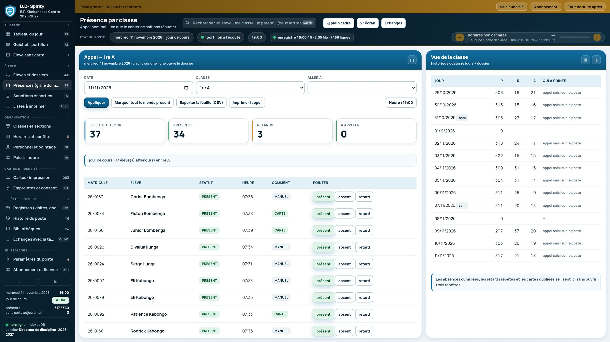
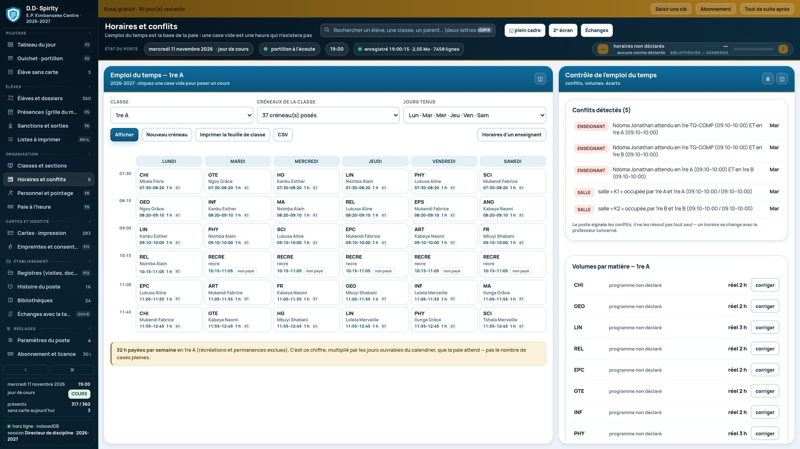
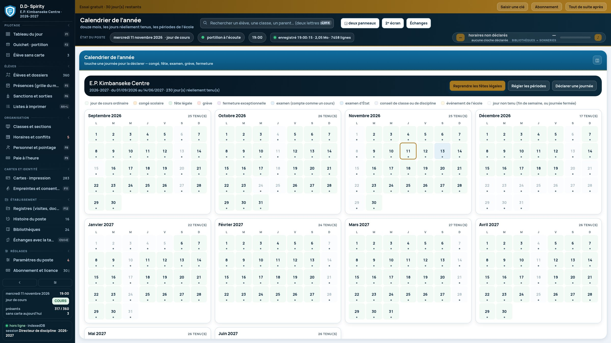

Le poste du Directeur de Discipline. À la première sonnerie, le bureau sait qui est entré, qui est en retard et qui manque à l'appel. Vingt-deux écrans, un seul fichier, aucune connexion — et un téléphone qui va chercher au portillon ce que le bureau ne peut pas voir.
Un Directeur de Discipline tient une journée entière dans sa tête : les entrées, les retards, les sorties, les oublis de carte, les sanctions, les heures faites par les professeurs. D.D- Spirity pose tout cela sur un seul écran, à l'heure où la décision se prend.
Le poste s'ouvre sur le tableau du jour : effectif, présents, retards, absents, sorties en cours, sans-carte, sanctions, personnel arrivé. Chaque chiffre est cliquable et mène à sa source — un compteur qu'on ne peut pas vérifier ne sert à rien.
Tout se signe du nom de qui décide. Le logiciel ne déclare personne absent, ne juge aucune sanction et n'invente aucun taux : il montre les faits et garde la trace.
C'est la suite réelle des écrans du poste, du portillon jusqu'à la paie du mois.
Le tableau du jour est déjà là : effectif attendu, présents pointés au portillon, retards au-delà de l'heure limite, absents à justifier. Les séances non validées attendent, et les conflits d'horaire sont signalés avant la première heure.
Au guichet, le poste lit la carte, le QR ou le matricule dicté — sans souris. La photo de l'élève s'affiche, la présence s'enregistre, et le nom de qui a laissé entrer est écrit. Une carte perdue, bloquée ou remplacée est refusée, et le refus s'explique.
L'oubli a son propre écran. On choisit la preuve retenue — photo confirmée par un adulte, appel nominal, code à quatre chiffres — et l'entrée est signée. Au troisième oubli du mois, le rappel au parent s'écrit dans le dossier.
Présent, retard, absent, avec le motif et l'heure. Le poste prépare les boutons dans le sens que l'école a choisi (relever les absents, ou les présents). L'historique de quatorze jours se lit sur le même écran, sans ouvrir trois fenêtres.
Une sortie s'autorise avec un motif, une durée annoncée et le nom de qui autorise. Tant qu'aucun retour n'est constaté, elle reste ouverte et s'affiche comme telle — c'est ce qui empêche la cour de se vider sans qu'on le voie.
Les séances d'une journée se valident une par une : faite, réduite à la durée réelle, non faite, ou remplacée. Ce sont ces heures-là, et seulement elles, qui entrent dans le calcul du mois — au taux que l'école a écrit dans la fiche de l'agent.
Le poste tient le registre de l'école dans trente-sept tables, et rien n'en sort sans une action de l'école.
Recherche large (nom, matricule, classe, téléphone du parent), fiche complète, tuteur, sanctions, observations, oublis de carte, pièces du dossier avec l'alerte quand il en manque une.
Recto et verso aux cotes réelles (85,60 × 53,98 mm), huit par feuille A4, QR pour le portillon et CODE-128 pour le secrétariat. Le numéro de carte n'est pas le numéro d'élève : une carte remplacée porte une nouvelle série et l'ancienne cesse d'ouvrir.
Appel par classe, retards, absences, motifs. Sanctions avec faits, décision, suites et état ; sorties avec retour constaté. Tout est daté et signé.
Classes construites sur la nomenclature de l'école (7e / 8e par lettres, humanités par section), horaires par créneau, détection des conflits — un professeur attendu deux fois, une salle double, un créneau payant à zéro heure.
Fiches d'agents, pointage, service minimal et plafond, acomptes, retenues de retard, gel du mois validé. Les taux sont écrits par l'école : laissés à zéro, la ligne de paie l'affiche comme une donnée manquante, pas comme une erreur.
Année scolaire, périodes, vacances, fériés, examens, jours réellement tenus. Un jour fermé ne crée ni absence d'élève ni heure manquante pour le personnel.
Visites, documents, enquêtes, supervision. Et des listes que le bureau dresse lui-même — frais, convocations, matériel — imprimables avec leurs montants écrits à la main.
Une application réduite : le portillon et les tours de classes. Elle ne crée ni élève ni compte ; elle reçoit les listes du poste quand on la branche et rapporte ses notes. Chaque ligne qu'elle écrit est signée du nom de la session ouverte sur l'ordinateur.
Un fichier local, une copie de sécurité avant chaque écriture, un refus d'écraser un fichier plein, des sauvegardes horaires gardées 24 h, et un journal des écritures que l'école peut relire et exporter.
Appels, cartes, bulletins de paie, états et feuilles officielles, avec les réglages d'impression de l'école : papier, marges, en-tête, mentions, lignes de signature.
Captures du logiciel lui-même, sur une année d'essai chargée par l'installateur : ni maquette, ni image retouchée.



Le poste se livre vide : ni école fictive, ni tarif, ni volume horaire. Au premier lancement, l'installateur pose les décisions de l'école en neuf étapes.
Le bureau du Directeur de Discipline, installé sur le poste de l'école.
—Pour l'école qui ne veut rien installer : un fichier HTML, ouvert dans le navigateur du poste.
—Le téléphone du portillon et des tours de classes : il reçoit les listes et rapporte ses notes.
—Un bouton « Bientôt disponible » signifie qu'aucun fichier n'est encore publié pour ce format. Aucun lien ne mène ailleurs.